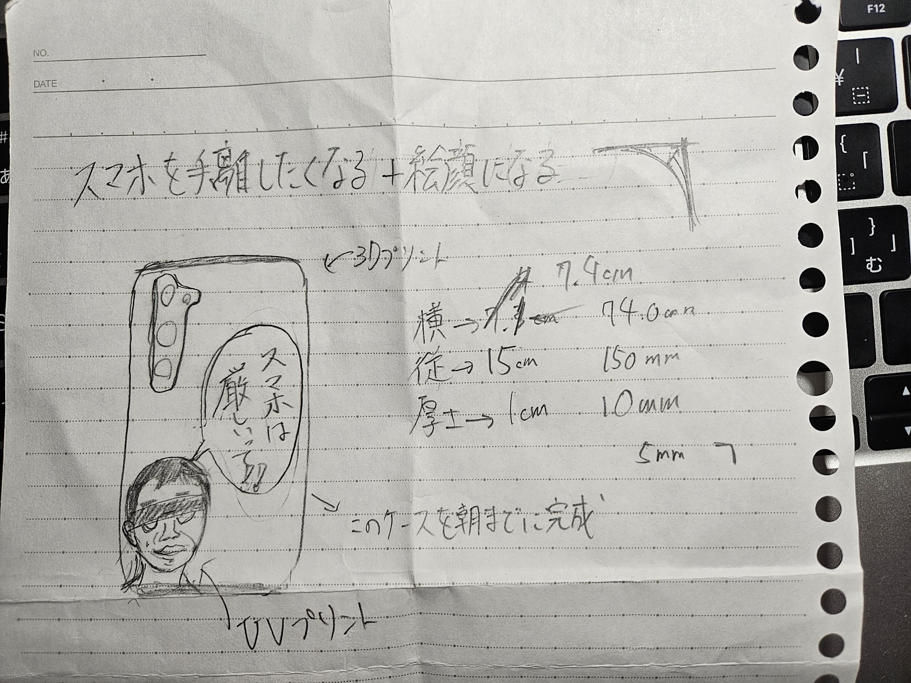

Design for Othres
1.観察者

説明
→今回観察した人はスマホ依存症の人達で何時間もスマホを見たり、10秒おきにスマホをいじってしまう人達についてだ。
自分も人のことを言えない立場なので、何とかこの依存から脱却するためにも今回の作品を作る。
※もともと班で作るものは「海外の人達に席を取られないための目標づくり」だ。
2.今回作ったもの→スマホケース


3.説明
コンセプト→思わずスマホを手放したくなるスマホケース+思わず笑顔になるスマホケース
スマホを無意識に見ちゃうスマホ中毒の人達に「厳しいって」で有名な危機感ニキの言葉を引用し、
道用Teacherとの勝手なタイアップを実現した唯一無二のスマホケースだ!!
道用先生の顔はイラストで描こうと思っていたが、あまりにもめんどくさいので写真をそのまま使った結果
あまりにもリアルな作品が完成してしまった。申し訳なさも込めてモザイク強めの写真で提供する。
4.感想
今回は、頭を完全にパーにしておふざけマシマシの頭で作った。そのおかげもあり、かなりの力作ができたと思う。
この課題で学んだことは、変に考えすぎて思考の偏ったものを作るより、ある程度方向性を決め自分の加えたい要素を全盛する考え方だ。
もちろんそれを行う前に相手の意見でいいと思ったところや参考になるところを取り入れた上で収束させる必要がある。
もしかしたら今回グループで話し合った意見も今回の作品に反映されているのかもしれない。
5.使用機材
・3Dプリンター
・UVプリンター
stlファイル


※UVプリンターの画像はモザイクなしが出るので割愛
6.メンバーの作品
・Noshi
・saki